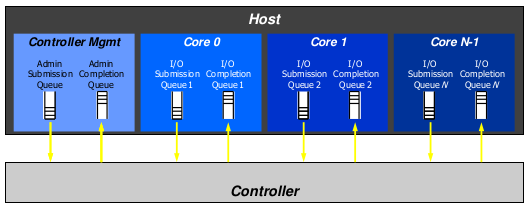
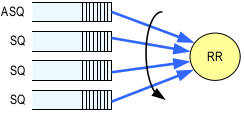
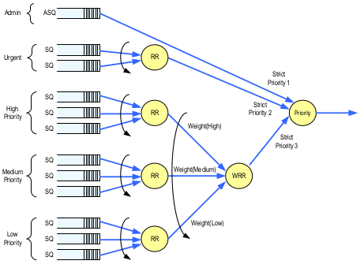
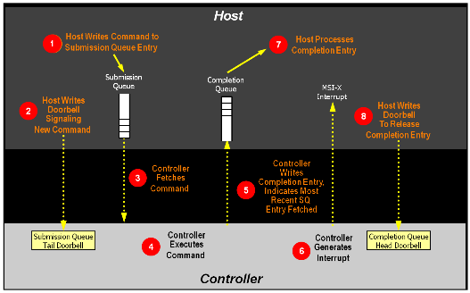

NVMe as a storage protocol is designed from the ground up to work with non-volatile memory (NVM),
including the current NAND flash technology and next-generation NVM technologies. As such, it does
not have the same limitations as storage protocols designed for hard disk drives..
Quote from NVMe_Overview
From the view of host software stack, the performance could benefit from the following points:
The most important advantage of NVMe over SCSI is that NVMe is specific for SSD while SATA and SAS is for HHD
NVM Express 1.3 and prior revisions define a register level interface for host software to communicate with a non-volatile memory subsystem over PCI Express (NVMe over PCIe).It also defines a standard command set for use with the NVM subsystem.
Submission Queue Entry – Command Format
Each command is 64 bytes in size.
Command Dword 0
| 31:16 | Command Identifier (CID) |
| 15:14 | PRP or SGL for Data Transfer (PSDT) |
| 13:10 | Reserved |
| 09:08 | Fused Operation (FUSE) |
| 07:00 | Opcode (OPC) |
| 03:00 | Command Dword 0 (CDW0) |
| 07:04 | Namespace Identifier (NSID) |
| 15:08 | Reserved |
| 23:16 | Metadata Pointer (MPTR) |
| 39:24 | Data Pointer (DPTR) |
| 43:40 | Command Dword 10 (CDW10) |
| 47:44 | Command Dword 11 (CDW11 |
| 51:48 | Command Dword 12 (CDW12) |
| 55:52 | Command Dword 13 (CDW13) |
| 59:56 | Command Dword 14 (CDW14) |
| 63:60 | Command Dword 15 (CDW15) |
Admin Queue and I/O queues

The Admin Queue is the Submission Queue and Completion Queue with identifier 0. The Admin Submission Queue and corresponding Admin Completion Queue are used to submit administrative commands and receive completions for those administrative commands, respectively.
An I/O Submission Queue is a Submission Queue that is used to submit I/O commands for execution by the controller (e.g. Read, Write for the NVM command set). I/O Submission Queue identifiers are from 1 to 65535. An I/O completion queue is used to store the completion status entry asscocated with one or multiple I/O submission queue.
To setup and initialize I/O Submission Queues and I/O Completion Queues for use, host software follows these steps:
1. Configures the Admin Submission and Completion Queues by initializing the Admin Queue Attributes (AQA), Admin Submission Queue Base Address (ASQ), and Admin Completion Queue Base Address (ACQ) registers appropriately. 2. Submits a Set Features command with the Number of Queues attribute to request the desired number of I/O Submission Queues and I/O Completion Queues. The completion queue entry for this Set Features command indicates the number of I/O Submission Queues and I/O Completion Queues allocated by the controller. 3. Determines the maximum number of entries supported per queue (CAP.MQES) and whether the queues are required to be physically contiguous (CAP.CQR). 4. Creates the desired I/O Completion Queues within the limitations of the number allocated by the controller and the queue attributes supported (maximum entries and physically contiguous requirements) by using the Create I/O Completion Queue command. 5. Creates the desired I/O Submission Queues within the limitations of the number allocated by the controller and the queue attributes supported (maximum entries and physically contiguous requirements) by using the Create I/O Submission Queue command.How to do this in linux nvme stack ?
124: 588675 0 0 0 0 0 0 0 IR-PCI-MSI 1048576-edge nvme0q0, nvme0q1 126: 0 386716 0 0 0 0 0 0 IR-PCI-MSI 1048577-edge nvme0q2 127: 0 0 575540 0 0 0 0 0 IR-PCI-MSI 1048578-edge nvme0q3 128: 0 0 0 627602 0 0 0 0 IR-PCI-MSI 1048579-edge nvme0q4 129: 0 0 0 0 740254 0 0 0 IR-PCI-MSI 1048580-edge nvme0q5 130: 0 0 0 0 0 544185 0 0 IR-PCI-MSI 1048581-edge nvme0q6 131: 0 0 0 0 0 0 313884 0 IR-PCI-MSI 1048582-edge nvme0q7 132: 0 0 0 0 0 0 0 587433 IR-PCI-MSI 1048583-edge nvme0q8
nvme_reset_work()
-> nvme_pci_configure_admin_queue()
-> nmve_alloc_queue() // nvme_device->queues[0] admin queue
// alloc coherent dma memory for the cq and sq.
// The queue depth is NVME_AQ_DEPTH (32)
// write the dma address of sq and cq to REG_ASQ and REG_ACQ
// To create admin submission and completion queue, just need to specify
// the base address in ASQ and ACQ.
-> nvme_alloc_admin_tags()
-> queue_depth = NVME_AQ_BLKMQ_DEPTH-1
flags = BLK_MQ_F_NO_SCHED // no io-scheduler for it
-> blk_mq_alloc_tag_set()
-> nvme_device->ctrl.admin_q = blk_mq_init_queue()
// the admin queue has been setup.
// setup the io queues sequentially.
-> nvme_setup_io_queues()
-> nvme_create_io_queues()
-> nvme_create_io_queues()
-> nvme_alloc_queue() // coherent dma memory allocation.
-> nvme_create_queue()
-> adapter_alloc_cq()
-> adapter_alloc_sq()
//send out Create I/O submission/Completion commands to
//adminq. The blk_execute_rq() will be invoked here.
-> nvme_dev_add()
>>>>
dev->tagset.ops = &nvme_mq_ops;
dev->tagset.nr_hw_queues = dev->online_queues - 1;
dev->tagset.timeout = NVME_IO_TIMEOUT;
dev->tagset.numa_node = dev_to_node(dev->dev);
dev->tagset.queue_depth =
min_t(int, dev->q_depth, BLK_MQ_MAX_DEPTH) - 1;
dev->tagset.cmd_size = nvme_cmd_size(dev);
dev->tagset.flags = BLK_MQ_F_SHOULD_MERGE;
//this tagset will be used for the I/O queues, which corresponds to the blk_mq_hw_ctx
The basic arbitration method
Round Robin Arbitration

If the round robin arbitration mechanism is selected, the controller shall implement round robin command arbitration amongst all Submission Queues, including the Admin Submission Queue
Weighted Round Robin with Urgent Priority Class Arbitration(option)

The Arbitration Mechanism Supported field in the Controller Capabilities register (CAP.AMS) indicates optional arbitration mechanisms supported by the controller. And host software could configure it thougth CC.AMS. What's about the linux nvme stack?
nvme_reset_work()
-> nvme_pci_configure_admin_queue()
-> nvme_enable_ctrl()
>>>>
ctrl->ctrl_config = NVME_CC_CSS_NVM;
ctrl->ctrl_config |= (page_shift - 12) << NVME_CC_MPS_SHIFT;
ctrl->ctrl_config |= NVME_CC_AMS_RR | NVME_CC_SHN_NONE; //----> here
ctrl->ctrl_config |= NVME_CC_IOSQES | NVME_CC_IOCQES;
ctrl->ctrl_config |= NVME_CC_ENABLE;
ret = ctrl->ops->reg_write32(ctrl, NVME_REG_CC, ctrl->ctrl_config);
>>>>
WRRU arbitration is not used by current nvme stack. Maybe we could exploit it by following method. Every cpu has two sq, one for sync reqs with higher weight, one for async reqs with lower weight. In fact, the kybe io scheduler does the same thing that assign sync and async requests with different queue depth.
Namespace
A quantity of non-volatile memory that may be formatted into logical blocks. When formatted, a namespace
of size n is a collection of logical blocks with logical block addresses from 0 to (n-1). In every namespace, the logical block addresses are independent.
An NVM subsystem is comprised of some number of controllers, where each controller may access some
number of namespaces, where each namespace is comprised of some number of logical blocks.A logical
block is the smallest unit of data that may be read or written from the controller. The logical block data size,
reported in bytes, is always a power of two. Logical block sizes may be 512 bytes, 1KB, 2KB, 4KB, 8KB,
etc. Supported logical block sizes are reported in the Identify Namespace data structure.
nvme_scan_work()
-> nvme_identify_ctrl()
//opcode = nvme_admin_identify, cns = NVME_ID_CNS_CTRL
//A Identify Controller data struct will be returned. Refer to NMV_Express_Revision_1.3 P112
// The NN field is Max Numbers of Namespace supported.
-> nvme_scan_ns_list()
-> nvme_identify_ns_list()
-> nvme_admin_identify NVME_ID_CNS_NS_ACTIVE_LIST
nvme_submit_sync_cmd() //nvme_ctrl->admin_q
-> nvme_validate_ns()
-> nvme_alloc_ns()
-> ns->queue = blk_mq_init_queue(ctrl->tagset)
-> queue_flag_set_unlocked(QUEUE_FLAG_NONROT, ns->queue);
// /dev/nvmexnx will be added here. And it will get the Identify Namespace Data Structure (NVM_Express_Revision_1.3 Figure114)
// with nvme_admin_identify + NVME_ID_CNS_NS which contain information about the namespace.
// for example, the size of the namespace.
// set_capacity(disk, le64_to_cpup(&id->nsze) << (ns->lba_shift - 9));
Every namespace corresponds to a request_queue. namespace is not partition, host software does not know the mapping of a namespace, but only the size and some other characters, so we cannot handle it as the partition which remap the sectors from partions to device in blk_partition_remap().
Command Processing Procedure

1. The host places one or more commands for execution in the next free Submission Queue slot(s) in memory. 2. The host updates the Submission Queue Tail Doorbell register with the new value of the Submission Queue Tail entry pointer. This indicates to the controller that a new command(s) is submitted for processing. 3. The controller transfers the command(s) from in the Submission Queue slot(s) into the controller for future execution. Arbitration is the method used to determine the Submission Queue from which the controller starts processing the next candidate command(s), refer to section 4.11. 4. The controller then proceeds with execution of the next command(s). Commands may complete out of order (the order submitted or started execution). 5. After a command has completed execution, the controller places a completion queue entry in the next free slot in the associated Completion Queue. As part of the completion queue entry, the controller indicates the most recent Submission Queue entry that has been consumed by advancing the Submission Queue Head pointer in the completion entry. Each new completion queue entry has a Phase Tag inverted from the previous entry to indicate to the host that this completion queue entry is a new entry. 6. The controller optionally generates an interrupt to the host to indicate that there is a new completion queue entry to consume and process. In the figure, this is shown as an MSI-X interrupt, however, it could also be a pin-based or MSI interrupt. Note that based on interrupt coalescing settings, an interrupt may or may not be generated for each new completion queue entry. 7. The host consumes and then processes the new completion queue entries in the Completion Queue. This includes taking any actions based on error conditions indicated. The host continues consuming and processing completion queue entries until it encounters a previously consumed entry with a Phase Tag inverted from the value of the current completion queue entries. 8. The host writes the Completion Queue Head Doorbell register to indicate that the completion queue entry has been consumed. The host may consume many entries before updating the associated Completion Queue Head Doorbell register.
NVMe commands
There are two sets in NVMe commands, admin command set and NVM command set.We will introduce some of them to get a overview of the NVMe.
Dataset Management command (DSM)
The Dataset Management command is used by the host to indicate attributes for ranges of logical blocks.This includes attributes like frequency that data is read or written, access size, and other information that may be used to optimize performance and reliability. This command is advisory; a compliant controller may choose to take no action based on information provided.
Data Pointer (DPTR)
| 03:00 | Context Attributes |
| 07:04 | Length in logical blocks |
| 15:08 | Starting LBA |
| 31:08 | Reserved |
| 07:00 | Number of Ranges (NR) |
| 31:03 | Reserved |
| 02 | Attribute – Deallocate (AD) |
| 01 | Attribute – Integral Dataset for Write (IDW) |
| 00 | Attribute – Integral Dataset for Read (IDR) |
In most cases, the controller maintains a lookup table to translate the memory array physical block address (PBA) to the logical block address (LBA) used by the host system. The controller's wear-leveling algorithm determines which physical block to use each time data is programmed, eliminating the relevance of the physical location of data and enabling data to be stored anywhere within the memory array.
The controller typically either writes to the available erased block with the lowest erase count (dynamic wear leveling); or it selects an available target block with the lowest overall erase count, erases the block if necessary
Given that previously written-to blocks must be erased before they are able to receive data again, the SSD controller must, for performance, actively pre-erase blocks so new write commands can always get an empty block.
mount -t ext4 -o discard /dev/sda2 /mnt
ext4_process_freed_data()
>>>>
if (test_opt(sb, DISCARD)) {
list_for_each_entry(entry, &freed_data_list, efd_list) {
err = ext4_issue_discard(sb, entry->efd_group,
entry->efd_start_cluster,
entry->efd_count,
&discard_bio);
>>>>
}
>>>>
static blk_status_t nvme_setup_discard(struct nvme_ns *ns, struct request *req,
struct nvme_command *cmnd)
{
unsigned short segments = blk_rq_nr_discard_segments(req), n = 0;
struct nvme_dsm_range *range;
struct bio *bio;
range = kmalloc_array(segments, sizeof(*range), GFP_ATOMIC);
if (!range)
return BLK_STS_RESOURCE;
__rq_for_each_bio(bio, req) {
u64 slba = nvme_block_nr(ns, bio->bi_iter.bi_sector);
u32 nlb = bio->bi_iter.bi_size >> ns->lba_shift;
range[n].cattr = cpu_to_le32(0);
range[n].nlb = cpu_to_le32(nlb);
range[n].slba = cpu_to_le64(slba);
n++;
}
>>>>
memset(cmnd, 0, sizeof(*cmnd));
cmnd->dsm.opcode = nvme_cmd_dsm;
cmnd->dsm.nsid = cpu_to_le32(ns->ns_id);
cmnd->dsm.nr = cpu_to_le32(segments - 1);
cmnd->dsm.attributes = cpu_to_le32(NVME_DSMGMT_AD);
req->special_vec.bv_page = virt_to_page(range);
req->special_vec.bv_offset = offset_in_page(range);
req->special_vec.bv_len = sizeof(*range) * segments;
req->rq_flags |= RQF_SPECIAL_PAYLOAD;
return BLK_STS_OK;
}
Asynchronous Event Request command
Asynchronous events are used to notify host software of status, error, and health information as these events occur. The Asynchronous Event Request command is submitted by host software to enable the reporting of asynchronous events from the controller. This command has no timeout. The controller posts a completion queue entry for this command when there is an asynchronous event to report to the host. If Asynchronous
Event Request commands are outstanding when the controller is reset, the commands are aborted.
nvme_reset_work()
-> nvme_start_ctrl()
-> nvme_queue_async_events()
-> queue async_event_work]
nvme_async_event_work()
-> ctrl->ops->submit_async_event()
nvme_pci_submit_async_event()
-> __nvme_submit_cmd() //queue command on queue0 (admin queue)
nvme_process_cq()
-> nvme_handle_cqe()
-> nvme_complete_async_event()
void nvme_complete_async_event()
>>>>
u32 result = le32_to_cpu(res->u32);
bool done = true;
switch (le16_to_cpu(status) >> 1) {
case NVME_SC_SUCCESS:
done = false;
/*FALLTHRU*/
case NVME_SC_ABORT_REQ:
++ctrl->event_limit;
if (ctrl->state == NVME_CTRL_LIVE)
queue_work(nvme_wq, &ctrl->async_event_work);
break; //submit async event again.
default:
break;
}
if (done)
return;
switch (result & 0xff07) {
// Refer to the NVM_Express_Revision_1.3 5.2.1
case NVME_AER_NOTICE_NS_CHANGED:
dev_info(ctrl->device, "rescanning\n");
nvme_queue_scan(ctrl);
break;
case NVME_AER_NOTICE_FW_ACT_STARTING:
queue_work(nvme_wq, &ctrl->fw_act_work);
break;
default:
dev_warn(ctrl->device, "async event result %08x\n", result);
}
>>>>
blk_mq_poll()
-> rq = blk_mq_tag_to_rq() //hctx->tags/hctx->sched_tags based on the cookie
-> __blk_mq_poll()
>>>>
while (!need_resched()) {
int ret;
hctx->poll_invoked++;
ret = q->mq_ops->poll(hctx, rq->tag);
if (ret > 0) {
hctx->poll_success++;
set_current_state(TASK_RUNNING);
return true;
}
>>>>
if (ret < 0)
break;
cpu_relax();
}
>>>>
static int __nvme_poll(struct nvme_queue *nvmeq, unsigned int tag)
{
struct nvme_completion cqe;
int found = 0, consumed = 0;
if (!nvme_cqe_valid(nvmeq, nvmeq->cq_head, nvmeq->cq_phase))
return 0;
//First check whether there is valid cqe, if no, return.
//This procedure is interrupt-enabled, before __nvme_poll() get the valid
//cqe, the interrupt has come and process the cqe. So nvme_poll() will not
//get any cqe here, but how does it get out of the loop of __blk_mq_poll() ?
spin_lock_irq(&nvmeq->q_lock);
while (nvme_read_cqe(nvmeq, &cqe)) {
nvme_handle_cqe(nvmeq, &cqe);
consumed++;
if (tag == cqe.command_id) {
found = 1;
break;
}
}
if (consumed)
nvme_ring_cq_doorbell(nvmeq);
spin_unlock_irq(&nvmeq->q_lock);
return found;
}
The answer is task state.
__blkdev_direct_IO_simple()
>>>>
qc = submit_bio(&bio);
for (;;) {
set_current_state(TASK_UNINTERRUPTIBLE);
if (!READ_ONCE(bio.bi_private))
break;
if (!(iocb->ki_flags & IOCB_HIPRI) ||
!blk_mq_poll(bdev_get_queue(bdev), qc))
io_schedule();
}
>>>>
The task state is set to TASK_UNINTERRUPTIBLE
The blk completion path will try to wake up this
process in bi_end_io callback, blkdev_bio_end_io_simple()
try_to_wake_up()
-> ttwu_queue()
-> ttwu_do_activate()
-> ttwu_do_wakeup()
-> p->state = TASK_RUNNING
in loop of __blk_mq_poll(), it will check the task state.
>>>>
while (!need_resched()) {
int ret;
hctx->poll_invoked++;
ret = q->mq_ops->poll(hctx, rq->tag);
>>>>
if (current->state == TASK_RUNNING)
return true;
if (ret < 0)
break;
cpu_relax();
}
>>>>
if the task state is set to TASK_RUNNING, it returns true.
w/o blk-mq polling
read : io=131072KB, bw=79007KB/s, iops=19751, runt= 1659msec
clat (usec): min=27, max=253, avg=49.46, stdev=33.61
w/ blk-mq polling
read : io=131072KB, bw=97019KB/s, iops=24254, runt= 1351msec
clat (usec): min=19, max=302, avg=40.90, stdev=34.31
The difference of average completion latency is 9us, about the time of two scheduling.
static void nvme_dev_disable(struct nvme_dev *dev, bool shutdown)
{
int i, queues;
bool dead = true;
struct pci_dev *pdev = to_pci_dev(dev->dev);
mutex_lock(&dev->shutdown_lock);
if (pci_is_enabled(pdev)) {
u32 csts = readl(dev->bar + NVME_REG_CSTS);
if (dev->ctrl.state == NVME_CTRL_LIVE ||
dev->ctrl.state == NVME_CTRL_RESETTING)
nvme_start_freeze(&dev->ctrl);
dead = !!((csts & NVME_CSTS_CFS) || !(csts & NVME_CSTS_RDY) ||
pdev->error_state != pci_channel_io_normal);
}
It will freeze the queues of namespaces of ths nvme_dev. The tasks that want to submit bio will be blocked at generic_make_request(), so no new requests will be submitted. In the process of system-wide suspend, the user mode tasks and freezable kernel tasks will be frozen before suspending devices, but there are still some kernel tasks may submit bios, such as the kworker threads.
/*
* Give the controller a chance to complete all entered requests if
* doing a safe shutdown.
*/
if (!dead) {
if (shutdown)
nvme_wait_freeze_timeout(&dev->ctrl, NVME_IO_TIMEOUT);
/*
* If the controller is still alive tell it to stop using the
* host memory buffer. In theory the shutdown / reset should
* make sure that it doesn't access the host memoery anymore,
* but I'd rather be safe than sorry..
*/
if (dev->host_mem_descs)
nvme_set_host_mem(dev, 0);
}
If the nvme device is not dead, it could still handle the requests, so we could wait the entered requests here. When nvme_wait_freeze_timeout() return without timeout, all the requests should have been handled, because every request will hold a q->q_usage_counter. nvme_stop_queues(&dev->ctrl); queues = dev->online_queues - 1; for (i = dev->ctrl.queue_count - 1; i > 0; i--) nvme_suspend_queue(dev->queues[i]);nvme_stop_queues() will quiesce the queues, so the hctx will not handle requests and interact with nvme devices.
if (dead) {
/* A device might become IO incapable very soon during
* probe, before the admin queue is configured. Thus,
* queue_count can be 0 here.
*/
if (dev->ctrl.queue_count)
nvme_suspend_queue(dev->queues[0]);
} else {
nvme_disable_io_queues(dev, queues);
nvme_disable_admin_queue(dev, shutdown);
}
nvme_pci_disable(dev);
If the nvme device has be dead, it could not handle the delete io queues command, so we just need to quiesce the admin_q in software.blk_mq_tagset_busy_iter(&dev->tagset, nvme_cancel_request, &dev->ctrl); blk_mq_tagset_busy_iter(&dev->admin_tagset, nvme_cancel_request, &dev->ctrl);In theory, all the tags should have been released if the device is not dead after nvme_wait_freeze_timeout(). For the scenario where the device has been dead, all the rqs that have driver tags will be requeued.
/* * The driver will not be starting up queues again if shutting down so * must flush all entered requests to their failed completion to avoid * deadlocking blk-mq hot-cpu notifier. */ if (shutdown) nvme_start_queues(&dev->ctrl);we could refer the following commit.
302ad8c (nvme: Complete all stuck requests)